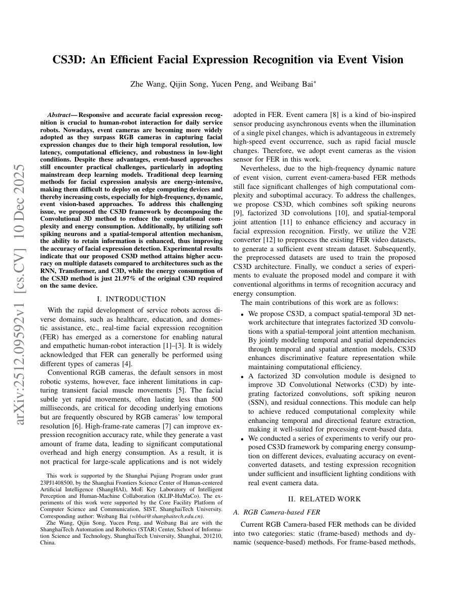
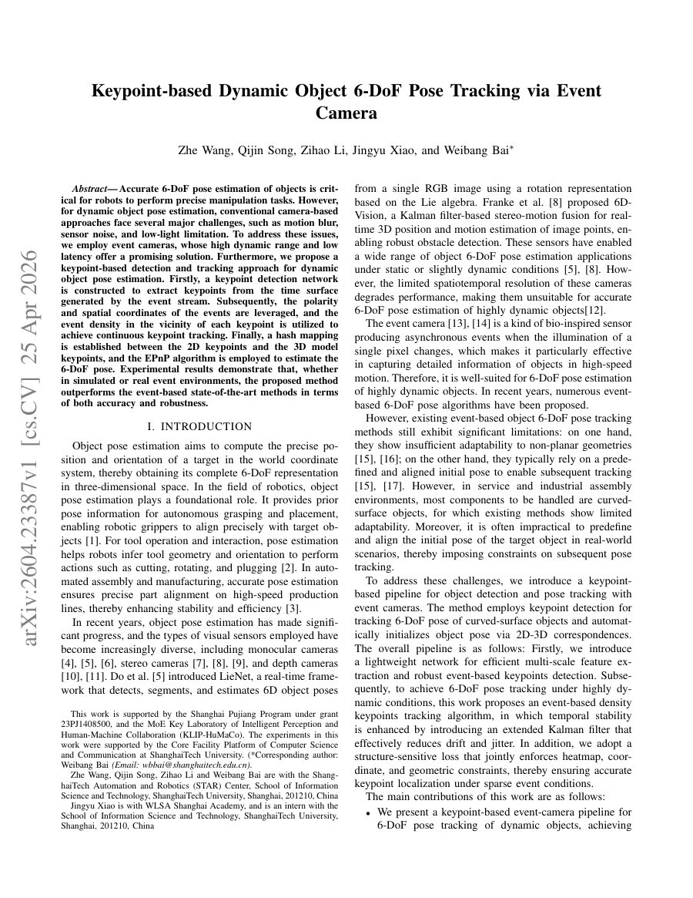

Event-based Vision
利用事件相机的高时间分辨率与低延迟特性，探索动态场景中的检测、跟踪和抓取。
ROBOTICS · VISION · INTELLIGENCE
你好，我是 Wong Je。我关注机器人感知、事件视觉、6D 位姿估计与智能抓取，并持续探索从算法原型到实时系统的完整路径。

我的项目聚焦于机器人如何从复杂环境中获取信息：从事件相机的低延迟视觉，到物体位姿估计、目标跟踪与抓取决策。
我喜欢动手构建完整系统，在仿真中快速验证想法，再把算法推进到实时运行。这里记录我的开源实验、研究原型与持续学习过程。
围绕机器人与真实世界交互所需的感知、估计和控制能力。
利用事件相机的高时间分辨率与低延迟特性，探索动态场景中的检测、跟踪和抓取。
研究 6D 位姿估计、RGB-D 感知与空间理解，让机器人获得可用于行动的环境表示。
通过物理仿真和强化学习训练机器人技能，并关注从策略验证到真实部署的落差。
将鼠标停留在论文封面上可查看简介，点击卡片即可下载完整 PDF。

PDF · 8 页面向服务机器人的实时表情识别，CS3D 将分解式 3D 卷积、软脉冲神经元与时空联合注意力结合， 在多数据集上兼顾识别精度与计算能效，同设备能耗仅为原始 C3D 的 21.97%。

PDF · 8 页针对高速运动、运动模糊和低照度场景，论文提出事件相机关键点检测与跟踪管线， 结合事件密度、极性自适应匹配、EKF 与 EPnP，实现动态物体 6-DoF 位姿的稳定估计。
保持联系